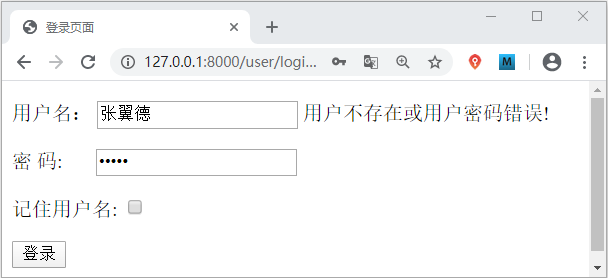

Django HTML表单实现用户登录退出（含源码）
在上一节中，我们实现了用户注册功能，在本节将继续介绍，如何使用 Django 实现用户的登录以及退出功能，希望大家通过这两节内容的学习，学会总结思路，把这个开发功能的过程反复练习，这样才能够更好的理解 Django 框架，而且在以后 Web 开发的道路上也会对自己大有裨益。
我们使用了两节的内容给大家讲述了 Django 如何实现最基本的注册登录以及退出功能，这两节代码较多，也设计到一些逻辑的理解，所以大家要勤加练习，多多复习，才能够熟练掌握。在下一节中，我们将简单介绍 Django 中的静态资源，比如文件的上传下载以及 CSV 文件的生成导出等。
1. HTML表单实现用户的登录
通过前一节的学习，通过 HTML 表单并不难实现用户的登录功能，那么大家先思考一下，用户登录的逻辑打开是怎么样的呢？分析这个逻辑，大家也可以去体验一下其他网站的登录功能，从用户的注册到登录最后用户退出，这整个的流程都需要大家细细的品味，并发现其中的规律，并且学以致用。当自己不熟练的时候，学会去借鉴其他人的经验，往往是一个不错的选择。下面就让我们一起来实现一下用户的注册功吧。1) HTML表单编写前端页面
在 user\templates\user 目录下新建 login.html 文件。并在其中编写如下代码：
<!DOCTYPE html>
<html lang="en">
<head>
<meta charset="UTF-8">
<title>登录页</title>
<style>
#pwd input{
margin-left:23px
}
</style>
</head>
<body>
<form action="/user/login/" method="post">
<!--传统的html登录表单-->
<p>
用户名： <input type="text" name="username" value="{{ username }}">
<span> {{ error }}</span>
</p>
<p id=pwd>
密码: <input type="text" name="password" value="{{ password }}">
</p>
<p>
记住用户名: <input type="checkbox" name="isSaved">
</p>
<p>
<input type="submit" value="登录">
</p>
</form>
</body>
</html>
上述代码理解起来非常的通俗易懂，但是不难发现我们在其中新增了一个记住用户名的小功能，大家想想这个功能又是如何实现的呢？没错它就是通过 Cookies 实现的。在前面的章节《Django中Cookie和Session介绍（一）》中，我们给大家详细的讲述了 Cookies与 Session，在本节我们将用到它们，如果忘记的小伙伴请抓紧时复习哦。
2) 编写视图层逻辑代码
在 user\views.py 中编写视图层用户登录逻辑代码，如下所示：
#用户的登录逻辑处理
def login_view(request):
#处理GET请求
if request.method == 'GET':
#1, 首先检查session，判断用户是否第一次登录，如果不是，则直接重定向到首页
if 'username' in request.session: #request.session 类字典对象
return HttpResponseRedirect('/index/allbook')
#2, 然后检查cookie，是否保存了用户登录信息
if 'username' in request.COOKIES:
#若存在则赋值回session，并重定向到首页
request.session['username'] = request.COOKIES['username']
return HttpResponseRedirect('/index/allbook')
#不存在则重定向登录页，让用户登录
return render(request, 'user/login.html')
# 处理POST请求
elif request.method == 'POST':
username = request.POST.get('username')
password = request.POST.get('password')
m = hashlib.md5()
m.update(password.encode())
password_m = m.hexdigest()
#判断输入是否其中一项为空或者格式不正确
if not username or not password:
error = '你输入的用户名或者密码错误 !'
return render(request, 'user/login.html', locals())
#若输入没有问题则进入数据比对阶段，看看已经注册的用户中是否存在该用户
users = User.objects.filter(username=username, password=password_m)
# 由于使用了filter, 所以返回值user是一个数组，但是也要考虑其为空的状态，即没有查到该用户
if not users:
error = '用户不存在或用户密码输入错误!!'
return render(request, 'user/login.html', locals())
# 返回值是个数组，并且用户名具备唯一索引，当前用户是该数组中第一个元素
users = users[0]
request.session['username'] = username
response = HttpResponseRedirect('/index/allbook')
#检查post 提交的所有键中是否存在 isSaved 键
if 'isSaved' in request.POST.keys():
#若存在则说明用户选择了记住用户名功能，执行以下语句设置cookie的过期时间
response.set_cookie('username', username, 60*60*24*7)
return response
完成视图层代码后，记得要配置路由映射关系，如下所示：
from django.urls import path
from user import views
urlpatterns=[
path('reg/',views.reg_view),
path('login/',views.login_view)
]
3）登录页面展示效果
输入数据库中已存在的用户名，但是将密码输入错误，则会有如下的显示：

图1：用户登录界面
输入正确的密码则会跳转到 index\allbook 页面，如果登录成功后，下次在访问 127.0.0.1/user/login/ 的时候，将将直接跳转到 index\allbook 页面，这就是 session 与 cookie 的作用，那么可想而知如果要实现用户的退出功能就需要将它们两个删除。
图1：用户登录界面
2. 实现用户的退出功能
用户的退出功能相对来说要简单的多，通过下面代码就可以实现：
def logout_view(request):
#实现退出功能
#删除session
if 'username' in request.session:
del request.session['username']
resp = HttpResponseRedirect('/user/index')
#删除cookie
if 'username' in request.COOKIES:
resp.delete_cookie('username')
return resp
#编写视图函数映射关系
urlpatterns = [
#http://127.0.0.1:8000/user/logout
path('logout/', views.logout_view)
]
大家可以自行编写一个简单的网站首页，我们知道退出功能的 button 都会显示在首页边角位置，所以只需要将退出功能的 url 关联到 <a> 标签的 href 属性即可实现点击退出的功能了。我们使用了两节的内容给大家讲述了 Django 如何实现最基本的注册登录以及退出功能，这两节代码较多，也设计到一些逻辑的理解，所以大家要勤加练习，多多复习，才能够熟练掌握。在下一节中，我们将简单介绍 Django 中的静态资源，比如文件的上传下载以及 CSV 文件的生成导出等。
关注公众号「站长严长生」，在手机上阅读所有教程，随时随地都能学习。内含一款搜索神器，免费下载全网书籍和视频。

微信扫码关注公众号